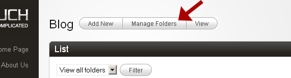
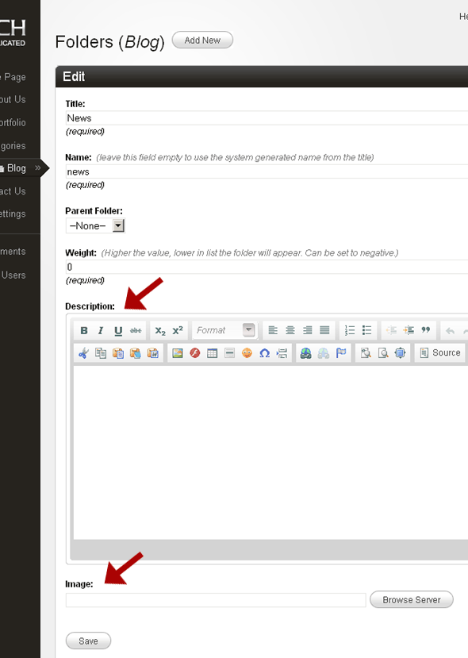

Dynamic Folders
Uptil now the only way of creating virtual folders for templates in Couch had been by using the 'folder' tag e.g. -
<cms:folder name="asia" title="Asian News">
<cms:folder name="china" title="China News" />
<cms:folder name="japan" title="Japan News" />
</cms:folder>
This approach was perfect for templates where the hierarchy of folders was fixed and known beforehand to the designer/developer who placed the tags in the templates.
However for templates, such as blogs, the end-user usually wished to create and manage folders by himself (for example while using the folders as categories for his posts). For such cases, it was not really practical to expect the end-user to edit the templates to tweak the folder hierarchy.
Version 1.1 now allows the end-user to create/manage the folders from within the admin panel.
By default the dynamic folders feature is turned off for all templates.
To turn on this capability for a particular template, the designer needs to add the 'dynamic_folders' attribute to the 'template' tag of this template.
For example -
<cms:template clonable='1' title='Blog' dynamic_folders='1'>
Once the dynamic folders feature is activated for a template, Couch will add a new button to the template's admin panel

The client can now manage the folders from the screen that shows up upon clicking the button shown above.
Apart from the regular attributes of a folder, the dynamic folders support two additional attributes - a description of the folder and an image associated with it.

These two values associated with a folder are now accessible within your template through the following variables -
k_folder_desc and k_folder_image within folder-view.
k_page_folderdesc and k_page_folderimage within page-view.
You might well ask at this point that now that we have two different ways of manipulating folders - the 'folder' tag and the admin panel, how will the two interact with other?
The answer is that once the dynamic folders feature is turned on for a template, Couch begins ignoring completely any 'folder' tags that might be present in the template.
Any existing folders that were created by Couch as a result of the 'folder' tags within the template will show up in the folder management screen, however any new changes made to the 'folder' tags will be completely ignored.
So effectively, we'll have only one method of handling folders.
VERY IMPORTANT: Take care NOT to turn off dynamic folders after once activating them. This is why -
Suppose this was the folder hierarchy imposed upon the template by using the 'folder' tags before activating dynamic folders
<cms:folder name="asia" title="Asian News">
<cms:folder name="china" title="China News" />
<cms:folder name="japan" title="Japan News" />
</cms:folder>
Under the influence of the code above, this template had three folders. At this point suppose we turn on dynamic folders.
The three existing folders will show up in the folder management screen that is now available but because the dynamic folders are turned on, Couch will now simply begin ignoring the folder tags shown above.
Suppose we now add another couple of folders to the template so the total of folders goes to five.
However, suppose that at this point we were to turn off the dynamic folders (by removing the 'dynamic_folders' attribute or setting it to '0'). Suddenly the hitherto ignored existing folder tags will begin exerting their influence. Couch will adjust the folders to bring them in concord to what is being dictated by the code above. This will result in our two newly added folders getting deleted without warning and the total number of folders getting back to three.
Please keep the above mentioned behaviour of dynamic folders in mind before turning them off after having once activated them.